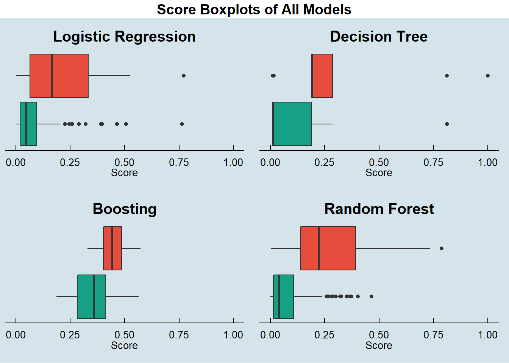
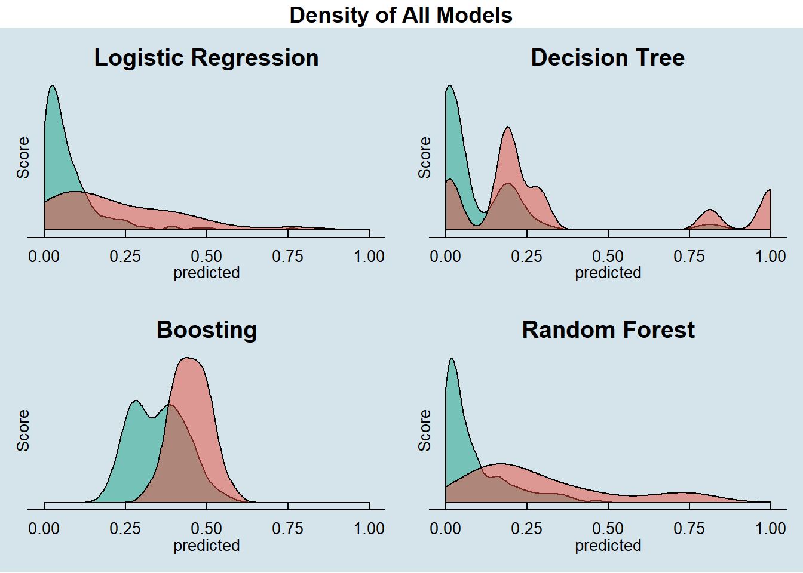
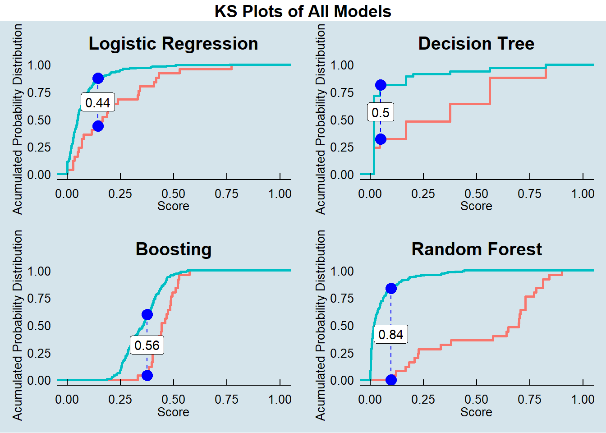

The goal of this session is to compare the performance of all the models created during this paper.
Here we consolidate the predicted score and the actual value of each observation in the test datasets.
## making preditions for each model and consilidating in a single data frame
prob.full = list()
prob.train = list()
prob.test = list()
prob.full$logistic.actual <- loan_dataset_logistic$y_loan_defaulter
prob.full$logistic.predicted <- predict(logistic.step, type = "response", newdata = loan_dataset_logistic)
prob.full$decision.tree.actual <- loan_dataset_DT$y_loan_defaulter
prob.full$decision.tree.predicted <- predict(tree.prune, type = "prob", newdata = loan_dataset_DT)[, 2]
prob.full$boosting.actual <- loan_dataset_boost$y_loan_defaulter
prob.full$boosting.predicted <- predict.boosting(boost, loan_dataset_boost)$prob[, 2]
prob.full$random.forest.actual <- loan_dataset_rf$y_loan_defaulter
prob.full$random.forest.predicted <- predict(rf.full, type = "prob", newdata = loan_dataset_rf)[, 2]
prob.train$logistic.actual <- data.train_logistic$y_loan_defaulter
prob.train$logistic.predicted <- predict(logistic.step, type = "response", newdata = data.train_logistic)
prob.train$decision.tree.actual <- data.train_DT$y_loan_defaulter
prob.train$decision.tree.predicted <- predict(tree.prune, type = "prob", newdata = data.train_DT)[, 2]
prob.train$boosting.actual <- data.train_boost$y_loan_defaulter
prob.train$boosting.predicted <- predict.boosting(boost, data.train_boost)$prob[, 2]
prob.train$random.forest.actual <- data.train_rf$y_loan_defaulter
prob.train$random.forest.predicted <- predict(rf.full, type = "prob", newdata = data.train_rf)[, 2]
prob.test$logistic.actual <- data.test_logistic$y_loan_defaulter
prob.test$logistic.predicted <- predict(logistic.step, type = "response", newdata = data.test_logistic)
prob.test$decision.tree.actual <- data.test_DT$y_loan_defaulter
prob.test$decision.tree.predicted <- predict(tree.prune, type = "prob", newdata = data.test_DT)[, 2]
prob.test$boosting.actual <- data.test_boost$y_loan_defaulter
prob.test$boosting.predicted <- predict.boosting(boost, data.test_boost)$prob[, 2]
prob.test$random.forest.actual <- data.test_rf$y_loan_defaulter
prob.test$random.forest.predicted <- predict(rf.full, type = "prob", newdata = data.test_rf)[, 2]
prob.full <- prob.full %>% as_tibble()
prob.train <- prob.train %>% as_tibble()
prob.test <- prob.test %>% as_tibble()To calculate the performance measures, derived from the confusion matrix, of each model we need to find the score cut off that best split our test dataset into Defaulters and Non Defaulters.
In this excercise we decide to not prioritize the accuracy on predicting Defaulters and Non Defaultes, therefore we are looking for the score cut off that best predict each class equaly.
We will use a custom function developed in this paper to calculate the best cut off for each model:
## making preditions for each model and consilidating in a single data frame
# calculateModelMetrics -------------------------------------------------------
# The objective of this function is to calculate main metrics of model performance according to a cutoff value.
calculateModelMetrics <- function(cutData, realData, predData){
cuttedData <- as.factor(ifelse(predData>=cutData, 1, 0))
invisible(capture.output(out <- CrossTable(realData, cuttedData, prop.c = F, prop.t = F, prop.r = T, prop.chisq = F)))
out <- as.data.frame(out) %>%
mutate(merged=paste0(t.x, t.y)) %>%
dplyr::select(merged, val=t.Freq)
TN <- filter(out, merged == "00")$val[1]
FP <- filter(out, merged == "01")$val[1]
FN <- filter(out, merged == "10")$val[1]
TP <- filter(out, merged == "11")$val[1]
return(data.frame(Cut = cutData,
TN = TN,
FP = FP,
FN = FN,
TP = TP,
TPR = TP/(TP+FN), TNR=TN/(TN+FP),
Error = (FP+FN)/(TP+TN+FP+FN),
Precision = TP/(TP+FP),
F1 = 2*(TP/(TP+FN))*(TP/(TP+FP))/((TP/(TP+FP)) + (TP/(TP+FN)))))
}
# modelMetrics ----------------------------------------------------------------
# The objective of this function is to calculate main metrics of model performance
# for cutoffs from 0-1 based on given step.
modelMetrics <- function(realData, predData, stepping = 0.01,
plot_title = "TPR/TNR by cutoff over full dataset"){
probCuts <- seq(from = 0, to = 1, by = stepping)
out <- bind_rows(lapply(probCuts, calculateModelMetrics, realData = realData, predData = predData))
out <- out[complete.cases(out),] %>% mutate(Difference = abs(TPR-TNR))
best <- out %>% arrange(Difference) %>% head(1) %>% dplyr::select(-Difference)
p <- plot_ly(x = ~out$Cut, y = ~out$Difference, name = 'Abs. Diff.', type = 'bar', opacity = 0.3) %>%
add_trace(x = ~out$Cut, y = ~out$TPR, name = 'TPR', type = 'scatter', mode = 'lines', opacity = 1) %>%
add_trace(x = ~out$Cut, y = ~out$TNR, name = 'TNR', type = 'scatter', mode = 'lines', opacity = 1) %>%
add_text(x = best$Cut, y = best$TPR, text = best$Cut, opacity = 1) %>%
layout(xaxis = list(title = "Cutoff Value"),
yaxis = list(title = "True Ratio (%)"),
title = plot_title)
return(list(TableResults = out,
BestCut = best,
Plot = p))
}With the returned object from these function we can plot the comparason between TPR (True Positive Rate) and TNR (True Negative Rate) to find the best cut off.
## getting measures -----------------------------------------------------------------
metricsByCutoff.test_log <- modelMetrics(prob.test$logistic.actual,
prob.test$logistic.predicted,
plot_title = 'Logistic Regression')
metricsByCutoff.test_DT <- modelMetrics(prob.test$decision.tree.actual,
prob.test$decision.tree.predicted,
plot_title = 'Decision Tree')
metricsByCutoff.test_boost <- modelMetrics(prob.test$boosting.actual,
prob.test$boosting.predicted,
plot_title = 'Boosting')
metricsByCutoff.test_rf <- modelMetrics(prob.test$random.forest.actual,
prob.test$random.forest.predicted,
plot_title = 'Random Forest')
cutoffs <- plotly::subplot(metricsByCutoff.test_log$Plot,
metricsByCutoff.test_DT$Plot,
metricsByCutoff.test_boost$Plot,
metricsByCutoff.test_rf$Plot,
nrows = 2) %>% hide_legend()
cutoffsWith the optimized cut off for each model we calculate the full set of model metrics.
# logistic regression
measures.logistic.train <- HMeasure(prob.train$logistic.actual,
prob.train$logistic.predicted,
threshold = metricsByCutoff.test_log$BestCut['Cut'])
measures.logistic.test <- HMeasure(prob.test$logistic.actual,
prob.test$logistic.predicted,
threshold = metricsByCutoff.test_log$BestCut['Cut'])
# decision tree
measures.decision.tree.train <- HMeasure(prob.train$decision.tree.actual,
prob.train$decision.tree.predicted,
threshold = metricsByCutoff.test_DT$BestCut['Cut'])
measures.decision.tree.test <- HMeasure(prob.test$decision.tree.actual,
prob.test$decision.tree.predicted,
threshold = metricsByCutoff.test_DT$BestCut['Cut'])
# boosting
measures.boosting.train <- HMeasure(prob.train$boosting.actual,
prob.train$boosting.predicted,
threshold = metricsByCutoff.test_boost$BestCut['Cut'])
measures.boosting.test <- HMeasure(prob.test$boosting.actual,
prob.test$boosting.predicted,
threshold = metricsByCutoff.test_boost$BestCut['Cut'])
# random forest
measures.random.forest.train <- HMeasure(prob.train$random.forest.actual,
prob.train$random.forest.predicted,
threshold = metricsByCutoff.test_rf$BestCut['Cut'])
measures.random.forest.test <- HMeasure(prob.test$random.forest.actual,
prob.test$random.forest.predicted,
threshold = metricsByCutoff.test_rf$BestCut['Cut'])
# join measures in a single data frame
measures <- t(bind_rows(measures.logistic.train$metrics,
measures.logistic.test$metrics,
measures.decision.tree.train$metrics,
measures.decision.tree.test$metrics,
measures.boosting.train$metrics,
measures.boosting.test$metrics,
measures.random.forest.train$metrics,
measures.random.forest.test$metrics
)) %>% as_tibble(., rownames = NA)
colnames(measures) <- c('logistic - train', 'logistic - test',
'decision.tree - train', 'decision.tree - test',
'boosting - train', 'boosting - test',
'random forest - train', 'random forest - test')
measures$metric = rownames(measures)
measures <- dplyr::select(measures, metric, everything())Below are the metrics on the train dataset:
| logistic - train | decision.tree - train | boosting - train | random forest - train | |
|---|---|---|---|---|
| H | 0.3612900 | 0.5637664 | 0.8026685 | 0.8523849 |
| Gini | 0.6641411 | 0.7917987 | 0.9558250 | 0.9311659 |
| AUC | 0.8320705 | 0.8958993 | 0.9779125 | 0.9655830 |
| AUCH | 0.8475456 | 0.8958993 | 0.9809432 | 0.9741930 |
| KS | 0.5492033 | 0.6941268 | 0.8788171 | 0.8753272 |
| MER | 0.0920502 | 0.0774059 | 0.0502092 | 0.0188285 |
| MWL | 0.0859316 | 0.0583061 | 0.0231001 | 0.0237653 |
| Spec.Sens95 | 0.5339578 | 0.2122365 | 0.9180328 | 0.7704918 |
| Sens.Spec95 | 0.3725490 | 0.5801961 | 0.8627451 | 0.9019608 |
| ER | 0.3347280 | 0.2510460 | 0.1966527 | 0.0857741 |
| Sens | 0.8431373 | 0.9019608 | 1.0000000 | 0.9019608 |
| Spec | 0.6440281 | 0.7306792 | 0.7798595 | 0.9156909 |
| Precision | 0.2205128 | 0.2857143 | 0.3517241 | 0.5609756 |
| Recall | 0.8431373 | 0.9019608 | 1.0000000 | 0.9019608 |
| TPR | 0.8431373 | 0.9019608 | 1.0000000 | 0.9019608 |
| FPR | 0.3559719 | 0.2693208 | 0.2201405 | 0.0843091 |
| F | 0.3495935 | 0.4339623 | 0.5204082 | 0.6917293 |
| Youden | 0.4871654 | 0.6326399 | 0.7798595 | 0.8176517 |
| TP | 43.0000000 | 46.0000000 | 51.0000000 | 46.0000000 |
| FP | 152.0000000 | 115.0000000 | 94.0000000 | 36.0000000 |
| TN | 275.0000000 | 312.0000000 | 333.0000000 | 391.0000000 |
| FN | 8.0000000 | 5.0000000 | 0.0000000 | 5.0000000 |
Below are the metrics on the test dataset:
| logistic - test | decision.tree - test | boosting - test | random forest - test | |
|---|---|---|---|---|
| H | 0.3070793 | 0.3261052 | 0.3681577 | 0.7667868 |
| Gini | 0.5195531 | 0.5497207 | 0.6594413 | 0.9472626 |
| AUC | 0.7597765 | 0.7748603 | 0.8297207 | 0.9736313 |
| AUCH | 0.7915084 | 0.7820112 | 0.8528492 | 0.9792179 |
| KS | 0.4370950 | 0.4956425 | 0.5689385 | 0.8435754 |
| MER | 0.1078431 | 0.1225490 | 0.1176471 | 0.0441176 |
| MWL | 0.1210592 | 0.1084679 | 0.0927047 | 0.0336409 |
| Spec.Sens95 | 0.3072626 | 0.4189944 | 0.6089385 | 0.8659218 |
| Sens.Spec95 | 0.3200000 | 0.2020000 | 0.3200000 | 0.7200000 |
| ER | 0.3333333 | 0.2794118 | 0.2598039 | 0.0833333 |
| Sens | 0.6400000 | 0.7600000 | 0.7200000 | 0.9200000 |
| Spec | 0.6703911 | 0.7150838 | 0.7430168 | 0.9162011 |
| Precision | 0.2133333 | 0.2714286 | 0.2812500 | 0.6052632 |
| Recall | 0.6400000 | 0.7600000 | 0.7200000 | 0.9200000 |
| TPR | 0.6400000 | 0.7600000 | 0.7200000 | 0.9200000 |
| FPR | 0.3296089 | 0.2849162 | 0.2569832 | 0.0837989 |
| F | 0.3200000 | 0.4000000 | 0.4044944 | 0.7301587 |
| Youden | 0.3103911 | 0.4750838 | 0.4630168 | 0.8362011 |
| TP | 16.0000000 | 19.0000000 | 18.0000000 | 23.0000000 |
| FP | 59.0000000 | 51.0000000 | 46.0000000 | 15.0000000 |
| TN | 120.0000000 | 128.0000000 | 133.0000000 | 164.0000000 |
| FN | 9.0000000 | 6.0000000 | 7.0000000 | 2.0000000 |
In this session we look at some metrics of each model on the test dataset.
First we look at the score box plots to see how well the models are able to split Defaulters and Non Defaultes.
boxplots <- ggarrange(Score_Boxplot(prob.test,
prob.test$logistic.predicted,
prob.test$logistic.actual,
'Logistic Regression'),
Score_Boxplot(prob.test,
prob.test$decision.tree.predicted,
prob.test$decision.tree.actual,
'Decision Tree'),
Score_Boxplot(prob.test,
prob.test$boosting.predicted,
prob.test$boosting.actual,
'Boosting'),
Score_Boxplot(prob.test,
prob.test$random.forest.predicted,
prob.test$random.forest.actual,
'Random Forest'))
boxplots <- annotate_figure(boxplots,
top = text_grob("Score Boxplots of All Models",
color = "black", face = "bold",
size = 14))
boxplots
Another way to look at the score distribution of each model is ploting its density histograms.
density_plots <- ggarrange(Score_Histograms(prob.test,
prob.test$logistic.predicted,
prob.test$logistic.actual,
'Logistic Regression'),
Score_Histograms(prob.test,
prob.test$decision.tree.predicted,
prob.test$decision.tree.actual,
'Decision Tree'),
Score_Histograms(prob.test,
prob.test$boosting.predicted,
prob.test$boosting.actual,
'Boosting'),
Score_Histograms(prob.test,
prob.test$random.forest.predicted,
prob.test$random.forest.actual,
'Random Forest'))
density_plots <- annotate_figure(density_plots,
top = text_grob("Density of All Models",
color = "black", face = "bold",
size = 14))
density_plots
Here we look at the acumulated probability distribution curves delivered by each model. From this plot we can derivate a key measure KS (Kolmogorov–Smirnov).
KS_plots <- ggarrange(
KS_Plot(prob.test$logistic.predicted[prob.test$logistic.actual == 0],
prob.test$logistic.predicted[prob.test$logistic.actual == 1],
'Logistic Regression'),
KS_Plot(prob.test$decision.tree.predicted[prob.test$decision.tree.actual == 0],
prob.test$decision.tree.predicted[prob.test$decision.tree.actual == 1],
'Decision Tree'),
KS_Plot(prob.test$boosting.predicted[prob.test$boosting.actual == 0],
prob.test$boosting.predicted[prob.test$boosting.actual == 1],
'Boosting'),
KS_Plot(prob.test$random.forest.predicted[prob.test$random.forest.actual == 0],
prob.test$random.forest.predicted[prob.test$random.forest.actual == 1],
'Random Forest'))
KS_plots <- annotate_figure(KS_plots,
top = text_grob("KS Plots of All Models",
color = "black", face = "bold",
size = 14))
KS_plots